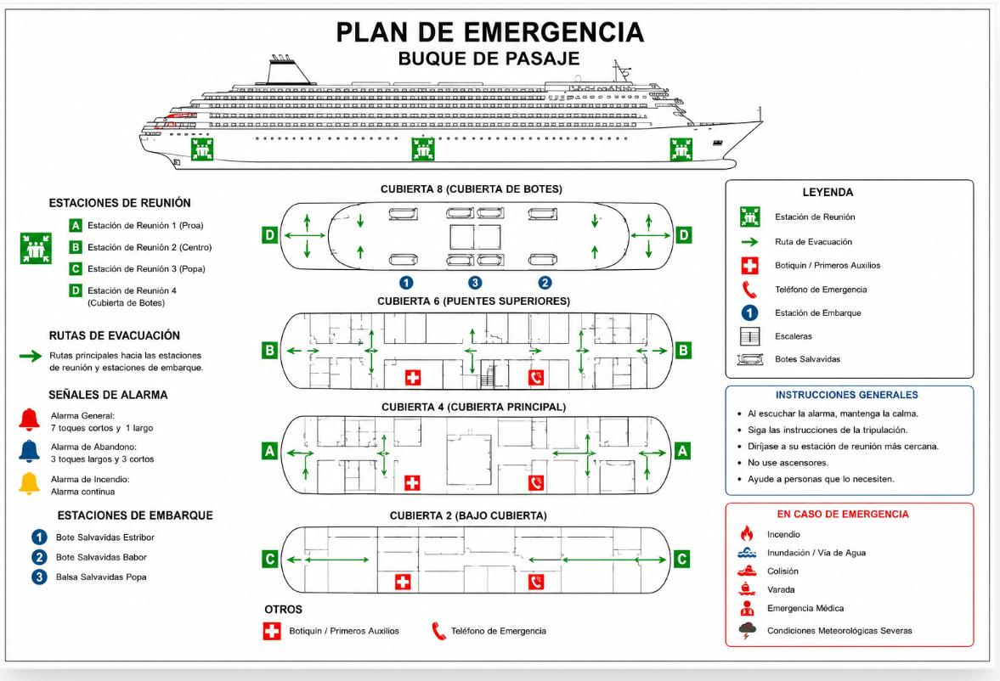

El Plan de Emergencia de la Tripulación reúne procedimientos, responsabilidades y acciones previamente establecidas para responder de forma rápida, coordinada y eficaz ante situaciones que afecten la seguridad del buque, los pasajeros, la tripulación o el medio marino.
De conformidad con el Convenio SOLAS, principalmente con el Capítulo III, «Dispositivos y Medios de Salvamento», y el Capítulo II-2, «Protección contra incendios, detección y extinción de incendios», toda la tripulación debe conocer anticipadamente las funciones que deberá desempeñar durante una emergencia. Esto evita improvisaciones y favorece una actuación organizada.
Las responsabilidades se asignan mediante el Cuadro de Obligaciones (Muster List), que identifica las tareas de cada miembro de la tripulación ante incendios, abandono del buque, inundaciones, colisiones u otras emergencias operacionales.
Su finalidad principal es proteger la vida humana, minimizar los riesgos para el buque y facilitar la evacuación segura de los pasajeros mediante una adecuada coordinación de la tripulación.

Los simulacros periódicos son obligatorios y permiten asegurar una respuesta rápida y eficaz ante cualquier incidente. Además, sirven para comprobar la preparación de la tripulación, la eficacia de los procedimientos y el correcto funcionamiento de los equipos.
En los buques de pasaje, la eficacia del plan depende en gran medida de que la tripulación conozca perfectamente sus funciones y pueda asistir oportunamente a los pasajeros durante una situación crítica.